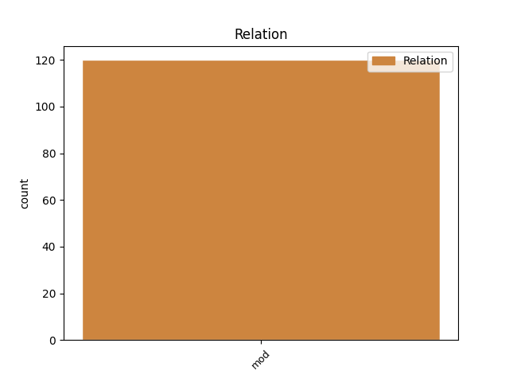
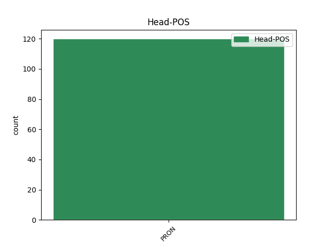
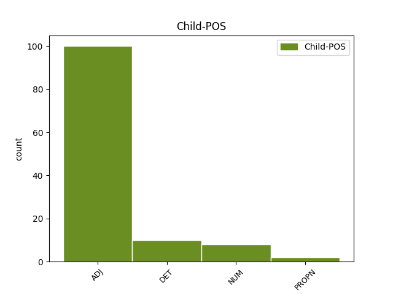

Distribution of features within this leaf



Agreement Rules sorted by frequency.
- When the dependent token is the modifer(mod) of the head token, and the head token is PRON and the dependent token is ADJ.
1 " _ _ _ _ 0 _ _ _
2 Ale _ _ _ _ 0 _ _ _
3 , _ _ _ _ 0 _ _ _
4 " _ _ _ _ 0 _ _ _
5 zaúpěla _ _ _ _ 0 _ _ _
6 žena _ _ _ _ 0 _ _ _
7 , _ _ _ _ 0 _ _ _
8 " _ _ _ _ 0 _ _ _
9 k _ _ _ _ 0 _ _ _
10 čemu co PRON PQ--3---------- Animacy=Inan|Case=Dat|PronType=Int,Rel 0 _ _ _
11 jinému jiný ADJ AANS3----1A---- Case=Dat|Degree=Pos|Gender=Neut|Number=Sing|Polarity=Pos 10 mod _ _
12 by _ _ _ _ 0 _ _ _
13 oči _ _ _ _ 0 _ _ _
14 byly _ _ _ _ 0 _ _ _
15 , _ _ _ _ 0 _ _ _
16 když _ _ _ _ 0 _ _ _
17 ne _ _ _ _ 0 _ _ _
18 pro _ _ _ _ 0 _ _ _
19 pláč _ _ _ _ 0 _ _ _
20 ? _ _ _ _ 0 _ _ _
21 " _ _ _ _ 0 _ _ _
1 Jak _ _ _ _ 0 _ _ _
2 to _ _ _ _ 0 _ _ _
3 tak _ _ _ _ 0 _ _ _
4 slyším _ _ _ _ 0 _ _ _
5 , _ _ _ _ 0 _ _ _
6 můžu _ _ _ _ 0 _ _ _
7 s _ _ _ _ 0 _ _ _
8 klidným _ _ _ _ 0 _ _ _
9 svědomím _ _ _ _ 0 _ _ _
10 říct _ _ _ _ 0 _ _ _
11 , _ _ _ _ 0 _ _ _
12 že _ _ _ _ 0 _ _ _
13 ostatním _ _ _ _ 0 _ _ _
14 lidem _ _ _ _ 0 _ _ _
15 dopřeji _ _ _ _ 0 _ _ _
16 ještě _ _ _ _ 0 _ _ _
17 míň _ _ _ _ 0 _ _ _
18 , _ _ _ _ 0 _ _ _
19 než _ _ _ _ 0 _ _ _
20 vy ty PRON PP-P1--2------- Case=Nom|Number=Plur|Person=2|PronType=Prs 0 _ _ _
21 dva dva NUM ClMP1---------- Animacy=Anim|Case=Nom|Gender=Masc|Number=Plur|NumForm=Word|NumType=Card|NumValue=1,2,3 20 mod _ SpaceAfter=No
22 . _ _ _ _ 0 _ _ _
23 " _ _ _ _ 0 _ _ _
1 " _ _ _ _ 0 _ _ _
2 Vy ty PRON PP-P5--2------- Case=Voc|Number=Plur|Person=2|PronType=Prs 0 _ _ _
3 ubohý _ _ _ _ 0 _ _ _
4 Done Don PROPN NNMS5-----A---- Animacy=Anim|Case=Voc|Gender=Masc|NameType=Giv|Number=Sing|Polarity=Pos 2 mod _ _
5 Juane _ _ _ _ 0 _ _ _
6 , _ _ _ _ 0 _ _ _
7 nebojte _ _ _ _ 0 _ _ _
8 se _ _ _ _ 0 _ _ _
9 , _ _ _ _ 0 _ _ _
10 nepřišla _ _ _ _ 0 _ _ _
11 jsem _ _ _ _ 0 _ _ _
12 vás _ _ _ _ 0 _ _ _
13 obtěžovat _ _ _ _ 0 _ _ _
14 . _ _ _ _ 0 _ _ _
Disagree Examples:
1 Nechtěl _ _ _ _ 0 _ _ _
2 jsem _ _ _ _ 0 _ _ _
3 tady _ _ _ _ 0 _ _ _
4 nechat _ _ _ _ 0 _ _ _
5 ani _ _ _ _ 0 _ _ _
6 dluh _ _ _ _ 0 _ _ _
7 , _ _ _ _ 0 _ _ _
8 který _ _ _ _ 0 _ _ _
9 bych _ _ _ _ 0 _ _ _
10 měl _ _ _ _ 0 _ _ _
11 , _ _ _ _ 0 _ _ _
12 že _ _ _ _ 0 _ _ _
13 bych _ _ _ _ 0 _ _ _
14 něco něco PRON PZ--4---------- Case=Acc|PronType=Ind 0 _ _ _
15 krásného krásný ADJ AANS2----1A---- Case=Gen|Degree=Pos|Gender=Neut|Number=Sing|Polarity=Pos 14 mod _ _
16 nestihl _ _ _ _ 0 _ _ _
17 - _ _ _ _ 0 _ _ _
18 ani _ _ _ _ 0 _ _ _
19 dluh _ _ _ _ 0 _ _ _
20 finanční _ _ _ _ 0 _ _ _
21 . _ _ _ _ 0 _ _ _
1 Protože _ _ _ _ 0 _ _ _
2 je _ _ _ _ 0 _ _ _
3 přesvědčen _ _ _ _ 0 _ _ _
4 , _ _ _ _ 0 _ _ _
5 že _ _ _ _ 0 _ _ _
6 už _ _ _ _ 0 _ _ _
7 neuděláte _ _ _ _ 0 _ _ _
8 nic nic PRON PW--4---------- Case=Acc|PronType=Neg 0 _ _ _
9 špatného špatný ADJ AANS2----1A---- Case=Gen|Degree=Pos|Gender=Neut|Number=Sing|Polarity=Pos 8 mod _ SpaceAfter=No
10 . _ _ _ _ 0 _ _ _
1 " _ _ _ _ 0 _ _ _
2 Víš _ _ _ _ 0 _ _ _
3 , _ _ _ _ 0 _ _ _
4 já _ _ _ _ 0 _ _ _
5 si _ _ _ _ 0 _ _ _
6 tu _ _ _ _ 0 _ _ _
7 neděli _ _ _ _ 0 _ _ _
8 prostě _ _ _ _ 0 _ _ _
9 myslela _ _ _ _ 0 _ _ _
10 , _ _ _ _ 0 _ _ _
11 že _ _ _ _ 0 _ _ _
12 není _ _ _ _ 0 _ _ _
13 nic nic PRON PW--1---------- Case=Nom|PronType=Neg 0 _ _ _
14 důležitějšího důležitý ADJ AANS2----2A---- Case=Gen|Degree=Cmp|Gender=Neut|Number=Sing|Polarity=Pos 13 mod _ _
15 než _ _ _ _ 0 _ _ _
16 ta _ _ _ _ 0 _ _ _
17 blůza _ _ _ _ 0 _ _ _
18 . _ _ _ _ 0 _ _ _
19 . _ _ _ _ 0 _ _ _
20 . _ _ _ _ 0 _ _ _
21 a _ _ _ _ 0 _ _ _
22 v _ _ _ _ 0 _ _ _
23 pondělí _ _ _ _ 0 _ _ _
24 už _ _ _ _ 0 _ _ _
25 ne _ _ _ _ 0 _ _ _
26 . _ _ _ _ 0 _ _ _
1 Co co PRON PQ--4---------- Animacy=Inan|Case=Acc|PronType=Int,Rel 0 _ _ _
2 říct _ _ _ _ 0 _ _ _
3 jiného jiný ADJ AANS2----1A---- Case=Gen|Degree=Pos|Gender=Neut|Number=Sing|Polarity=Pos 1 mod _ _
4 než _ _ _ _ 0 _ _ _
5 tohle _ _ _ _ 0 _ _ _
6 . _ _ _ _ 0 _ _ _
1 Ale _ _ _ _ 0 _ _ _
2 dělat _ _ _ _ 0 _ _ _
3 třeba _ _ _ _ 0 _ _ _
4 jen _ _ _ _ 0 _ _ _
5 půl _ _ _ _ 0 _ _ _
6 hodiny _ _ _ _ 0 _ _ _
7 denně _ _ _ _ 0 _ _ _
8 něco něco PRON PZ--4---------- Case=Acc|PronType=Ind 0 _ _ _
9 nudného nudný ADJ AANS2----1A---- Case=Gen|Degree=Pos|Gender=Neut|Number=Sing|Polarity=Pos 8 mod _ _
10 je _ _ _ _ 0 _ _ _
11 pěkná _ _ _ _ 0 _ _ _
12 dřina _ _ _ _ 0 _ _ _
13 . _ _ _ _ 0 _ _ _